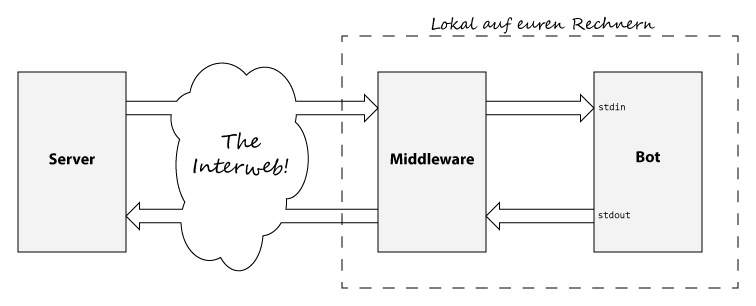

Alle Berechnungen zur Änderung des Spielzustands werden von einem Server übernommen. Pro Berechnungsschritt übermittelt
dieser euren Bots den aktuellen Spielzustand, den ihr anschließend auswerten und in ein Kommando übersetzen müsst. Dieses müsst ihr
dem Server zurückschicken, um die nächste Handlung eures Bots bekannt zu geben.
Damit ihr euch keine Gedanken, um die konkrete Übertragung von Daten zum Server machen müsst, haben wir ein kleines Program geschrieben, das euch diese Aufgabe abnimmt. Diese Middleware startet eure Bots, leitet ihnen die Daten von Server über
stdin weiter und wartet dann auf die Antwort eures Bots über
stdout, um
diese anschließend wieder zum Server zu schicken.

Programmiersprachen
Es gibt keine Enschränkungen bzgl. der Programmiersprache. Wenn Compiler oder Interpreter im Rechenzentrum nicht installiert sind, sagt uns bitte bescheid und wir werden diese nachinstallieren.
Testen
Testen könnt ihr eure Bots auf einem Server der FH-Wedel. Wenn ihr euch mit der Middleware auf den Server verbindet, wird dort kein neues Spiel für euch gestartet. Alle Bots befinden sich auf dem selben Spielfeld und können live gegeneinander antreten.
Die Middleware zum Starten eurer Bots könnt ihr hier herunterladen. Wir stellen jedoch nur eine 64-Bit Version für Linux bereit, da wir diese auch im Wettbewerb verwenden werden. Eine Installation ist nicht notwendig. Wenn wir euch ein Repository anlegen, werden wir euch die Middleware dort ebenfalls bereitstellen.
Zum Starten eures Bots mit Hilfe der Middleware müsst ihr die config-Datei middleware.conf anpassen. Diese sollte wie folgt aussehen:
bot=mybot
name=myname
- mybot
-
Im einfachsten Fall ist dies nur eine ausführbare Datei. Wenn ihr eurem Programm Parameter übergeben wollt könnt ihr diese hier ebenfalls angeben. Auch ein Interpreter kann hier angegeben werden.
- myname
- Hier gebt ihr den Namen an, unter dem ihr testen wollt. Dieser muss in der Datei
bot.names in eurem Repository hinterlegt sein. Im Wettbewerb werden wir eurem Bot den Namen zuordnen, der hier eingetragen ist.
Starten der Middleware:
./Programmierwettbewerb-Middleware
Die folgenden Parameter könnt ihr optional angeben. Diese überscheiben eure Angaben in der middleware.conf.
- -bot
- Zur Angabe eures Bots. Hier gelten die gleichen Bedingungen wie in der
middleware.conf
- -name
- Euer Name für diesen Test. Dieser muss in der Datei
bot.names in eurem Repository hinterlegt sein.
- -numBots
- Anzahl der Bots, die ihr starten wollt. Standardmäßig startet die Middleware einen Bot.
Wenn ihr euch die Middleware selbst kompilieren wollt, könnt ihr dies selbstverständlich tun. Die Quellen findet ihr im Repository.
Für den Wettbewerb stellen wir euch SVN-Repositories bereit. Schreibt uns einfach eine Mail und wir schalten euch ein Repository frei. Unsere E-Mail Adressen findet ihr unter Kontakt.
Executable
Betriebssystem
Im Wettbewerb werden wir alles auf einem 64-Bit Linux ausführen!
Zusatzinformation für Faule
Die ausführbare Datei muss eigentlich erst für den Wettbewerb korrekt in der middleware.conf eingetragen sein. Wird würden jedoch gerne vorab einige Tests
machen und bitten euch immer eine ausführbare Datei einzutragen. Dies erleichtert euch zudem das Testen.
Bot-Namen
Namen zum Testen eintragen
Jedes SVN-Repository enthält eine Datei mit dem Namen bot.names. Diese kann beliebig editiert werden und enthält pro Zeile einen
Namen, unter denen ihr euren Bot auf unserem Server testen könnt. Einen der eingetragenen Namen könnt ihr mit dem -name-Flag der Middleware angeben.
Um eine Eindeutigkeit zu gewährleisten, denkt euch bitte eindeutige Namen aus oder nutzt einen originellen Präfix für eure Bots.
Name im Wettbewerb
Im Wettbewerb wird der erste Eintrag (1. Zeile) der bot.names als offizieller Bot-Name genutzt. Bitte tragt dort euren
finalen Wunschnamen ein.
Hintergrund
Grund dafür ist, dass wir auf dem Server Statistiken für jedes Repository führen. Gleichzeitig möchten wir die Möglichkeit bieten,
anonym zu testen, dass andere Mitspieler nicht wissen, von wem der großartige Super-Bot grade ist, der alles auf dem Server auffrisst. :)
Bots mit Namen, welche nicht in der (hochgeladenen) bot.names auftauchen, werden vom Server abgewiesen.
Der Server macht selbstständig SVN-Updates und vergleicht die Einträge der bot.names mit dem angegebenen Namen von der Middleware.
Die Updates erfolgen jedoch nur alle paar Minuten. Daher kann es sein, dass ihr nach einem 'SVN commit' ein paar Minuten warten müsst,
bis ihr mit den neuen Nicknames testen könnt.
Eigene Namen verwenden
Bitte nehmt davon Abstand, unter fremden Namen zu testen. Wiederholtes Verletzen dieser Regel kann zur Disqualifikation
führen (Ja, wir loggen alle Daten dazu ;)).
Die Middleware schickt euch die Daten in einem an Python-orientierten Format und erwartet dies auch von euren Bots.
Eingabe für eure Bots von der Middleware
type BotId = Int
type TeamId = Int
type Index = Int
type Position = (Float, Float)
type Mass = Int
type Blob = (BotId, TeamId, BlobId, Position, Mass)
type Food = (Position, Mass)
type Toxin = (Position, Mass)
type OwnBlobs = [Blob]
type OtherBlobs = [Blob]
type Input = (OwnBlobs, OtherBlobs, [Food], [Toxin])
Ausgabe von euren Bots an die Middleware
data BlobAction = None | Throw | Split
type Position = (Float, Float)
type Output = (BlobAction, Position)
Eingabe im Beispiel (Zeilenumbrüche nicht berücksichtigen)
([(3,0,1,(8.0,7.0),100)],
[(13,1,4,(4.0,3.0),100)],
[((6.5,1.5),10)],
[((2.0,6.0),10)])
Ausgabe im Beispiel
(None,(9.0,2.5))
In dieser Übersicht sehr ihr, wie ihr die Eingabe in verschiedenen Sprachen parsen könnt.
Bitte sagt Bescheid, wenn ihr weitere Sprachen kennt, mit denen dieses Format leicht zu parsen ist. Wenn ihr eure Parser anderen Teilnehmern bereitstellen wollt, nehmen wir diese natürlich auch gerne in diese Auflistung auf.
Python
def process(data) {
// TODO: Calculate the target and action of your bot!
}
while (1):
line = sys.stdin.readline()
data = eval(line)
print process(data)
Show in Repository
C
#define PWB_IMPLEMENTATION
#include "pwb.h"
BotCommand process(const VisibleGameState* const visibleGameState) {
Vec2 target;
BotActionType botActionType;
// TODO: Calculate the target and action of your bot!
return pwb_mkBotCommand(botActionType, &target);
}
int main() {
#define INPUT_BUFFER_MAX_LENGTH 20000
#define OUTPUT_BUFFER_MAX_LENGTH 100
char inputBuffer[INPUT_BUFFER_MAX_LENGTH];
char outputBuffer[OUTPUT_BUFFER_MAX_LENGTH];
for (;;) {
pwb_getline(inputBuffer, INPUT_BUFFER_MAX_LENGTH);
ParseContext parseContext = pwb_mkContext(inputBuffer);
VisibleGameState visibleGameState;
if (!pwb_parseAll(&parseContext, &visibleGameState)) {
pwb_printErrors(&parseContext, stderr);
exit(1);
}
BotCommand botCommand = process(&visibleGameState);
pwb_toString(outputBuffer, &botCommand);
printf("%s\n", outputBuffer);
fflush(stdout);
}
return 0;
}
Show in Repository